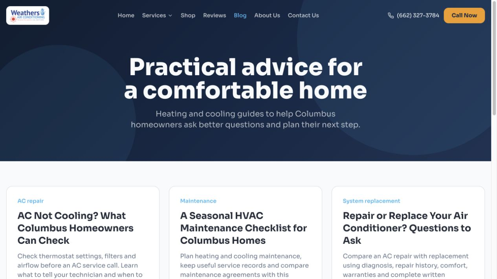

Plan and current status
October 1, 2026 · Live domain: https://weathersair.com · Host: Vercel
The new domain now returns HTTPS 200. The September 30 audit remains a historical snapshot of the preview; it should not be read as a fresh claim that every old preview defect still exists on production.
This plan covers the remaining website, conversion, Google SEO and AI visibility work. The first implementation is on local branch fix/production-seo-and-content, based on current main. It has not been pushed or deployed. Vercel production environment settings were prepared separately; they apply on the next deployment.
Release the verified foundation first, then expand service pages and local proof. Do not measure success by blog count alone: measure qualified requests and booked jobs.
October 1 update: 12 researched location pages
Implemented locally; not yet deployed. Scope: roughly 60 miles from Columbus, interpreted as a geographic radius rather than road distance. All three states appear in general coverage copy. Town pages retain the Columbus office identity and ask visitors to confirm exact-address scheduling.
| Town / route | Distinct focus | Research source |
|---|---|---|
Columbus, MS/service-areas/columbus-ms | Older homes, additions and uneven temperatures | MDAH: South Columbus Historic District |
Starkville, MS/service-areas/starkville-ms | Rental turnover and comfort near campus | Greater Starkville Development Partnership: Cotton District |
West Point, MS/service-areas/west-point-ms | Downtown businesses and household schedules | Visit Mississippi: West Point |
Aberdeen, MS/service-areas/aberdeen-ms | Thoughtful HVAC upgrades in established buildings | MDAH: Aberdeen Downtown Historic District |
Amory, MS/service-areas/amory-ms | Matching equipment to the home you have today | City of Amory: History |
Caledonia, MS/service-areas/caledonia-ms | A practical handoff for moving households | Town of Caledonia: About |
Macon, MS/service-areas/macon-ms | Clear service arrangements for town and outlying addresses | City of Macon: Welcome |
Louisville, MS/service-areas/louisville-ms | Coordinate HVAC work with a remodel | City of Louisville: Code Enforcement |
Aliceville, AL/service-areas/aliceville-al | Home comfort at the Mississippi–Alabama border | Atlas Alabama: Aliceville |
Reform, AL/service-areas/reform-al | Maintenance around trees and outdoor equipment | City of Reform: Community history |
Vernon, AL/service-areas/vernon-al | Service planning at the Highway 17 and 18 crossroads | Atlas Alabama: Vernon |
Fayette, AL/service-areas/fayette-al | Comfort planning for spaces with changing occupancy | City of Fayette: Visitors and community events |
Each page includes unique guidance, a local FAQ, a preparation checklist, call/request actions, nearby towns, service and blog links, a source link, Service and BreadcrumbList schema, a self-referencing canonical, and a sitemap entry. Local guidance uses conditional language and does not claim completed jobs or customer relationships. Town selection carries into the request form, including from the mobile bar.
Ordered work plan
| Phase / status | Area | Work | Completion requirement |
|---|---|---|---|
| 1 · Ready locally | Website foundation | Production canonicals and share metadata; page titles; build-generated sitemap and robots; static HTML for all 26 pages; custom 404 output; legacy about/contact redirects. | Deploy this branch, then verify statuses, sitemap and rendered/raw HTML on weathersair.com. |
| 2 · Ready locally; production secret saved | Resend forms | Secure Vercel endpoint, fixed sender/recipient, field validation, truthful success/errors, timeouts and duplicate-request protection. Newsletter requests are office notifications. | Verify sending domain DNS; apply endpoint rate limiting; deploy; send one authorized test and confirm Resend delivery and Mary’s inbox. |
| 3 · Ready locally | Conversion and accessibility | Clear service/location H1; Request Service wording; visible mobile menu close control; static readable content/counters; remove global commerce script; privacy notice. | Owner reviews business claims/privacy practices; confirm mobile call bar on final site and shop behavior after navigating away. |
| 4 · Ready locally | Five blog posts | Blog index, five full articles, related guides, service links, sources, dates and BlogPosting/breadcrumb schema. | Review factual content and publish with the release. Set actual publication dates if release occurs later than October 1. |
| 5 · Next priority | Dedicated service pages | Keep /services as a hub; add /ac-repair, /heating-repair, /ac-installation, /hvac-maintenance and /commercial-hvac first. Then /duct-cleaning, /duct-sealing, /plumbing and /electrical. | Confirm offered work, diagnostic/estimate policies, plan inclusions, genuine project photos, credentials and actual coverage before copy expands. |
| 6 · Account/hosting work | Old-domain migration | Map old site URLs to matching new pages and retain redirects and email records. | Requires old hosting/DNS control and CMS/GSC inventory. New-project redirects alone cannot migrate an old host. |
| 7 · Account work | Google, Bing and local visibility | Verify properties, submit sitemap, inspect priority URLs, Change of Address where applicable; update existing GBP and owned citations. | Use authorized access; keep the existing GBP and reviews. Verify Facebook/Yelp identities instead of assuming new URLs are correct. |
| 8 · Follow-through | Performance, measurement and authority | Final-domain PageSpeed/CWV checks; GA4 lead events; booked-job tracking; technical dependency updates; real project case studies and local links. | Need analytics property/consent requirements, owner facts and production measurements. No performance or ranking guarantee. |
Resend delivery design
From: Weathers Air Conditioning <support@team.weathersair.com>
To: mary@weathersairconditioning.com
Reply-To: visitor’s validated email, when supplied.
Endpoint: POST /api/contact.
The sender and recipient are fixed on the server. The secret is stored as a sensitive production RESEND_API_KEY in the verified Weathers Vercel project, never in the client bundle. VITE_SITE_URL is set to https://weathersair.com and VITE_FORM_ENDPOINT to /api/contact for the next production build.
Before activating: verify team.weathersair.com in Resend, add the exact DNS records supplied by Resend, retain the old domain’s mailbox DNS, and apply a Vercel firewall rate limit to the endpoint. Start with five POSTs per IP per minute and adjust based on legitimate use. Browser-origin checks and honeypots are useful but do not replace abuse controls.
All contact and newsletter-request notifications go to Mary. Newsletter success says a signup request was sent; it does not claim automatic list enrollment. Resend acceptance and final inbox delivery are different checks. No real test notification was sent during this implementation.
A sending identity does not automatically create an inbound support mailbox. Public direct-contact links still use Mary’s existing mailbox until inbound handling for support@team.weathersair.com is confirmed.
Five-blog launch collection
| Topic | URL | Search intent | Conversion path |
|---|---|---|---|
| AC not cooling | /blog/ac-not-cooling-columbus-ms | Urgent troubleshooting / service intent | Residential HVAC; call or request service |
| Seasonal maintenance checklist | /blog/hvac-maintenance-checklist-columbus-ms | Maintenance planning | Maintenance plans |
| Repair or replace an air conditioner | /blog/repair-or-replace-air-conditioner | Replacement evaluation | Residential repair and installation |
| Duct cleaning vs duct sealing | /blog/duct-cleaning-vs-duct-sealing | Compare different ductwork services | Duct sealing / service overview |
| Choosing an air filter | /blog/choosing-air-filter-for-your-home | Filter selection | Shop replacement filters |
Each article has a readable introduction, practical sections, primary-source links, a business byline, a publication date, relevant service CTA and related guides. No invented customer story, technician review, price or savings figure was added. Search targets are based on service fit, not claimed keyword-volume data. Owner review can add genuine local experience later.

Page titles and sitemap
| Canonical URL | Generated title |
|---|---|
| https://weathersair.com/ | HVAC Services in Columbus, MS | Weathers Air Conditioning |
| https://weathersair.com/about | About Our Columbus, MS HVAC Company | Weathers Air Conditioning |
| https://weathersair.com/blog | HVAC Tips for Columbus, MS Homeowners | Weathers Air Conditioning |
| https://weathersair.com/contact | Request HVAC Service in Columbus, MS | Weathers Air Conditioning |
| https://weathersair.com/privacy-policy | Website Privacy Notice | Weathers Air Conditioning |
| https://weathersair.com/reviews | Columbus, MS Customer Reviews | Weathers Air Conditioning |
| https://weathersair.com/services | HVAC, Plumbing & Electrical in Columbus, MS | Weathers Air Conditioning |
| https://weathersair.com/shop | Shop Air Filters & HVAC Supplies | Weathers Air Conditioning |
| https://weathersair.com/blog/ac-not-cooling-columbus-ms | AC Not Cooling? What Columbus Homeowners Can Check | Weathers Air Conditioning |
| https://weathersair.com/blog/choosing-air-filter-for-your-home | How to Choose the Right Air Filter for Your HVAC System | Weathers Air Conditioning |
| https://weathersair.com/blog/duct-cleaning-vs-duct-sealing | Duct Cleaning vs. Duct Sealing: Which Does Your Home Need? | Weathers Air Conditioning |
| https://weathersair.com/blog/hvac-maintenance-checklist-columbus-ms | A Seasonal HVAC Maintenance Checklist for Columbus Homes | Weathers Air Conditioning |
| https://weathersair.com/blog/repair-or-replace-air-conditioner | Repair or Replace Your Air Conditioner? Questions to Ask | Weathers Air Conditioning |
The sitemap includes the six existing marketing pages, blog index, five posts and privacy page. It excludes API paths, fragments and the 404 page. It is generated from the same route inventory as the static pages, reducing drift when content changes. No fabricated last-modified dates or unnecessary priority values are included.
Both HTML responses and client navigation carry page metadata. The generated HTML includes content and structured data before JavaScript runs. Vercel clean URLs replace the previous catch-all rewrite so unknown paths can return genuine 404 responses.
Service-page expansion brief
For each future service page: use one distinct customer intent, a service/location H1, a plain-language explanation of work offered, symptoms or situations addressed, the appointment process, estimate/diagnostic policy, verified coverage, relevant evidence and a request/call CTA. Connect each page to the service hub and relevant blog. Do not create multiple thin pages for AC repair synonyms.
Suggested first titles: “AC Repair in Columbus, MS | Weathers Air”; “Heating Repair in Columbus, MS | Weathers Air”; “AC Installation in Columbus, MS | Weathers Air”; “HVAC Maintenance in Columbus, MS | Weathers Air”; “Commercial HVAC in Columbus, MS | Weathers Air”. These are planned pages, not part of the current 26-page implementation.
The owner confirmed work in Mississippi, Alabama and Tennessee, and selected a roughly 60-mile radius from Columbus for the first location-page release. Twelve town pages and a service-area hub are now implemented locally. Each has researched local context and useful property guidance; owner-supplied project evidence remains a future enhancement. Tennessee town pages are outside this initial geographic scope.
Migration, Google and AI checklist
- Inventory historical pages from old CMS, Search Console, analytics and backlinks. Start with / → /, /services/ → /services, /about-us/ → /about, /contact-us/ → /contact, /reviews/ → /reviews, /shop/ → /shop and /privacy-policy/ → /privacy-policy.
- Configure permanent redirects on the old domain’s host, preserving relevant shop fragments and query strings. Keep old-domain registration, TLS and email DNS active; retain redirects at least a year.
- Verify old/new properties in Search Console and Bing Webmaster Tools. Submit https://weathersair.com/sitemap.xml and inspect homepage, services, contact and articles. Complete the applicable Change of Address process after redirects are working.
- Update the existing Google Business Profile website link, accurate categories, hours, services and photos. Confirm name/address/phone consistency and correct social profiles. Request honest customer reviews without incentives or satisfaction filtering.
- Allow search crawlers through both robots.txt and hosting protections. OAI-SearchBot is for ChatGPT search; GPTBot is a separate training preference. No special AI file is required for Google AI visibility.
- Add actual technician insight, original job photos and project summaries. Keep business identity, hours, coverage and credentials consistent in visible copy and schema.
- Record a monthly fixed query sample across Google AI features, ChatGPT search and Perplexity. Distinguish mentions, citations, recommendations and qualified referral leads.
Sources: Google migrations, Google local ranking, Google AI search, OpenAI crawler controls, Resend email API.
Remaining items from the original audit
| Original finding | Status / next action |
|---|---|
| Contact form / code-version mismatch | New endpoint implemented locally; actual production receipt and deployed commit still need verification. |
| TLS/domain readiness | HTTPS 200 confirmed today. Canonical-domain variables prepared; test www/HTTP redirects at release. |
| Domain migration | New-project legacy about/contact aliases prepared. Old-host redirects and inventory remain. |
| Staging URLs / missing metadata / sitemap | Corrected in generated output and verified across 26 pages; deploy to make live. |
| Mobile shop obstruction | Global plugin removed; isolated to Shop. Recheck vendor behavior and final-domain shop navigation at release. |
| Newsletter / form validation | Office notification wording, validation and error behavior implemented. Resend acceptance tested with mocks. |
| Privacy notice | Page and links added; owner review against actual practices remains. |
| Service intent coverage | Five supporting posts added. Dedicated service landing pages are the next content phase. |
| Age / emergency / review / credential claims | Removed conflicting 48-year phrase and unsupported duct-savings assertion; founding year, remaining 40-year/1980s copy, emergency availability, credentials, reviews and profiles await owner confirmation. |
| Duct-cleaning overclaims | Rewritten with inspection-led language and limits; sourced explanatory article added. |
| Soft 404 / JavaScript dependency | Static pages and custom 404 generated; catch-all removed. Verify actual Vercel status codes after deployment. |
| Social destinations | Confirm owned profiles; existing repository values retained rather than guessing replacements. |
| Shop experience | Load-on-Shop only, explanatory loading/phone fallback. Vendor domain settings, cart, errors and checkout need final testing. |
| Analytics and lead attribution | Pending GA4/property details, event verification and office booked-job process. |
| Dependency advisories | Existing warnings need a separate compatibility-tested upgrade; not automatically fixed with a force upgrade. |
Release and 30-day sequence
Release preparation: finish owner facts/privacy review, Resend domain verification, firewall rule and old-domain redirect setup. Review the local change set and five posts.
Release day: deploy the tested branch to the verified Vercel project. Check all sitemap URLs return 200, unknown routes 404, redirects are direct, canonicals are correct, and API errors are JSON. Verify one approved service request in Mary’s inbox; check mobile call actions and the shop without placing an order.
First week: Search Console/Bing/GBP updates, analytics events and booked-lead baseline. Build AC repair and heating repair pages using verified business details.
Weeks two to four: installation, maintenance and commercial pages; authentic team/project content; remaining service pages where supported. Review queries, click-through rates, qualified leads and actual bookings before adding more content.
Validation completed: 34 automated tests; lint and TypeScript; client/server production builds; 26-page metadata/schema/content/internal-link checks; desktop/mobile blog inspection with no errors observed. External mailbox delivery, old-host migration, production status codes after the new build, field Core Web Vitals and search rankings are not yet verified.